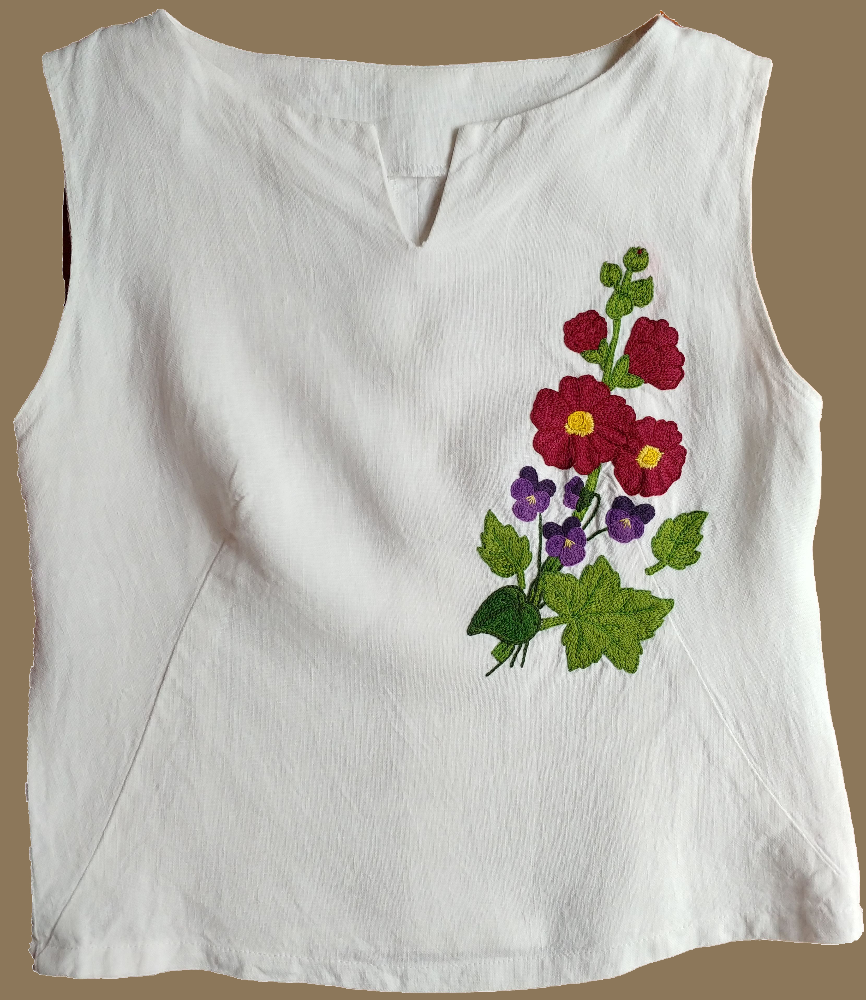
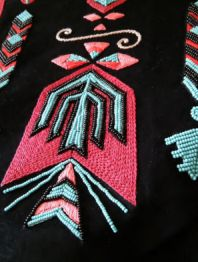
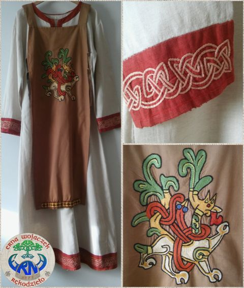
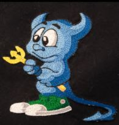
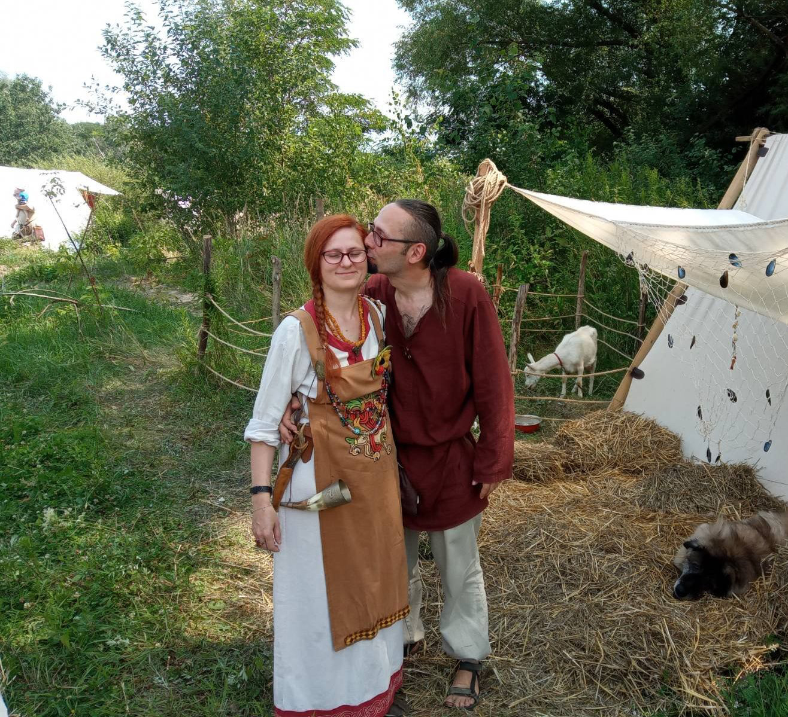

Haft łowicki
Tradycja ludowa
Rękodzieło · Hafty Tradycyjne · Rekonstrukcje Historyczne
Hafty ludowe, słowiańskie i dawne - tworzone z miłością do tradycji, z igłą w dłoni i historią w sercu.

Galeria
Wybrane prace - od haftów ludowych po rekonstrukcje historycznych wzorów słowiańskich.

Tradycja ludowa

Hafty słowiańskie

Rekonstrukcja historyczna
Tradycja ludowa

Hafty słowiańskie
Rekonstrukcja historyczna
Co oferuję
Każda praca powstaje ręcznie, z dbałością o tradycję i szczegół.
Projektuję i haftują według Twoich potrzeb - ubrania, dekoracje, pamiątki rodzinne. Każda praca jest unikatowa.
Specjalizuję się w odtwarzaniu dawnych wzorów słowiańskich i średniowiecznych - dla grup rekonstrukcyjnych i muzealnych.
Wzory łowickie, kurpiowskie, podhalańskie - tradycja zakonserwowana w ściegu krzyżykowym i haftach płaskich.
Prowadzę warsztaty dla początkujących i zaawansowanych. Nauka tradycyjnych technik haftowania z historycznym tłem.
Haftowane zastawki, poduszki, torby, ramki - piękne prezenty, w których żyje historia.
Masz własny pomysł na wzór lub motyw? Chętnie go zrealizuję - od projektu do gotowego haftu.

Rękodzielnik
Jestem Erna Wojaczek - rękodzielniczka z pasją do tradycji, historii i igły. Haft towarzyszy mi od dzieciństwa, ale swoje serce oddałam przede wszystkim wzornictwu dawnych Słowian i rekonstrukcjom średniowiecznym.
Każda praca to dla mnie podróż w czasie - do epoki, gdy wzory nie były tylko ozdobą, lecz opowieścią o świecie, naturze i człowieku. W swoich haftach staram się zachować tę głębię.
Tworzę z miłością do tradycji i precyzją rzemieślnika. Specjalizuję się w haftach ludowych, słowiańskich i dawnych technikach haftowania płaskiego, krzyżykowego i złotniczego.
Porozmawiajmy
Chcesz zamówić haft, wziąć udział w warsztacie lub po prostu porozmawiać o tradycji? Napisz.
Zamówienia realizuję z miłością i cierpliwością.
Czas realizacji ustalam indywidualnie.
Kliknij przycisk poniżej, żeby utworzyć wiadomość e-mail w swojej aplikacji pocztowej. Możesz też napisać bezpośrednio na adres podany obok.
Napisz e-mailOdpowiadam zazwyczaj w ciągu 1–2 dni roboczych.